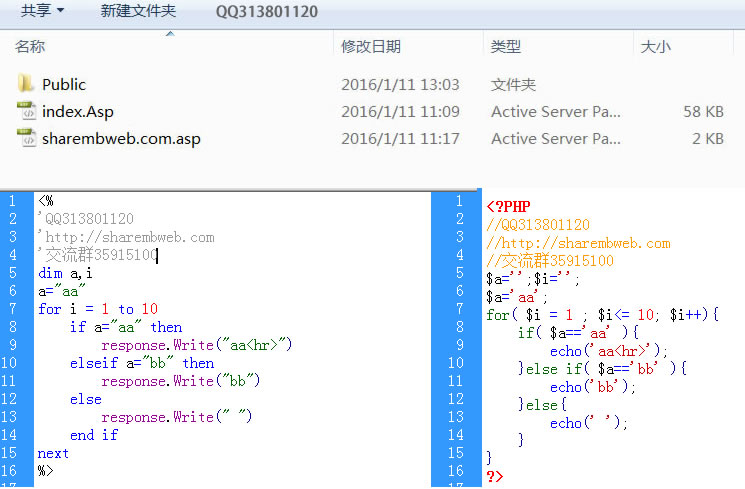

资源名称:ASP转PHP程序 v1.0
关键词:ASP转PHP程序 v1.0,AspToPHP,ASP转PHP,ASP代码转PHP代码
演示链接:ASP转PHP程序 v1.0
官方链接:ASP转PHP程序 v1.0官方
下载地址:[chinaz下载]
[admin5下载]
[csdn下载]
[ASP集中营]
资源截图:
资源描叙: 1、非常方便的就可以把asp代码转成php代码，操作及其简单
2、Public\ASP.php 为asp函数转换文件，集成了大量asp里的内置函数
3、MySqlClass.php 为操作mysql文件
4、sharembweb.com.asp 为要转换的asp文件 代码就写在这里。
交流学习QQ（313801120） 群（35915100）(群里已有几百人) 邮箱313801120@qq.com
作者呕心沥血花了大半年时间才开发出来，现在分享给大家。程序不免会有BUG,可
想获得更多帮助和下载最新版 请浏览(sharembweb.com)
在线演示：http://sharembweb.com/asptophp/